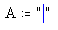

Creating a String |
A text string can be any group of characters including letters, numbers, punctuation, and spacing as well as special symbols. Strings must appear between double quotes. Strings have no numeric value, beyond the ability to map the characters to ANSI codes or convert them to numbers.
Although you usually define variables and functions in terms of numbers or expressions, you may also define them in terms of strings. You can assign strings to variable names and mix them freely with numbers in matrix elements. For example, you can use them as column labels. You can also use strings to define functions that take or return strings.
Most built-in functions and operators do not make sense when used with strings. Strings are, however, used as the arguments to some functions, such as the function that returns error messages.
| Defining string variables |
To create a string:
Click on a placeholder in a math expression or click on a blank space in your worksheet, and choose Math Region from the Insert menu.
Press the double-quote key ["] to get a pair of double quotes with an
insertion line between them.

Type any combination of letters, numbers, or other characters. Click outside the expression or press the right arrow key [→] twice when you are finished.
"hello world!"
A := "check OK"
A number string is a string containing characters that constitute a real, complex, floating point, negative, positive, exponential (engineering notation), hexadecimal, octal, or binary number. These strings can be interpreted by the str2num function. Spaces in number strings are ignored.
"5.67e-2", or "110100b" (an engineering notation and a binary number string)